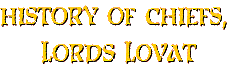
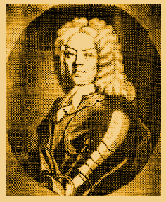

By * Angus Fraser

Simon (The Fox) Fraser, 18th MacShimidh, 11th Lord Lovat (1668 - 1747)
In the Time of Simon the Fox...
...a family of another name, usually native to the Fraser country, would get a large bag (a Boll) of grain when they took the name of Fraser, living in the Fraser Country, adopting the concerns of the Clan as their own. Those Frasers were called Boll O' Meal Frasers. Today, any one named Fraser, or any Sept of Fraser who would come to know the concerns of their Gaelic Forebears, the concerns of their clansmen and support preservation of the awareness of that way of life would be quite fitting, from a Clan perspective.
Simon the Fox's...
...father, Thomas Fraser of Beaufort, had inherited the estates of Lovat from his grand-nephew, Hugh Fraser, 9th Lord Lovat, because Hugh had four daughters but no male heir. Thomas Fraser was the fourth and only surviving son of Hugh Fraser, 7th Lord Lovat, so the estates went to him instead of Hugh Fraser, 9th Lord Lovat's eldest Daughter Amelia. Thomas' son Simon who was to become 11th Lord Lovat, had planned to marry the Lovat Heiress, Amelia. When his plan failed he retaliated. He besieged Castle Dounie with his clansmen taking possession of the lands. Some say he married Amelia's mother, the dowager Lady Lovat, others say he married Amelia, the heiress.
He was as true a "MacShimidh" as ever there had been. His Clansmen would regularly share his table for meals and if he came upon one of his Clan in passing he could tell the person how their blood lines tied and from whom. He placed nothing between himself and his kin and his ultimate concern was their welfare. He spoke Gaelic, English and French, maintaining relations with the Marquis De Frezeliere, in France considering him a blood relative, understanding their shared Norman roots. He befuddled the English numerous times, for they were not at all equipped to handle the character of the Highland terrain, or the character of it's warriors.
You Will Remember That Queen Anne
died in 1714 and the protestant George of Hanover was proclaimed
King. The North was restive and an armed body of Highlanders had
to be dispersed at Inverlochy near Fort William.
When King William died and Ann received the throne, the Chief
of the Frasers, Simon. went to France. He had been running a constant
battle with some Murrays of Athol. With his sturdy and trusted
Frasers at his side, he had frustrated and defeated the Murrays
at every turn. He captured the infamous General Dolyell, sent
to humiliate and put down the Clan.
Lovat had, through the Campbells' Duke of Argyll, managed a pardon
from King William for the crime of treason. There remained in
Scotland the charge of rape. The charge was never proven, but
it remained a threat, and when Argyll received and passed on to
the Fraser chief the information that the trial was to be "rigged",
Simon had no alternative but to leave the Highlands.
He went to France where he reported into the exiled James Stewart
VII of Scotland and England. Seeing their chance the Athol Murrays
put the granddaughter of the Duke of Athol into possession of
the lands of Lovat.
The Fraser Chiefship and the title had always been considered
one which could only devolve upon a man. Lovat was a 'male fief'.
A concession to this principle was the promise of the Clan that
Amelia Fraser would marry only a Fraser.
So, who was to be her husband and the leader of the great family?
A MacKenzie, who called himself MacKenzie of Fraserdale in an
effort to meet the promise of the Murrays.
MacKenzie's father was Lord Prestonhall, a corrupt judge of the
court at session. This older MacKenzie contrived, in Lovat's absence
in France, to get hold of the estate by buying a debt of eighty-three
pounds and levying the judgment against all of the Fraser country.
To the Athol Murrays were added the MacKenzies of Seaforth, all
now enemies of the Clan, bent upon its destruction. To support
an ally of these Clans was to support the enemies of the Frasers.
Perhaps here is a clue to the support the Frasers ultimately gave
to George I of Hanover against the Stewart king, James VII. This
and the imprisonment of their Chief by Stewart and the King's
disregard of the threat of James Fraser of Castle Leathers.
(Below is re-printed Lovat's letter to the Fraser Clan concerning
the events described above)
THE VIEWS OF LORD LOVAT
OF THE '45 ON THREATS TO HIS CLAN
And THE "ACT OF UNION"
"If it be God's will that for the punishment of my great and many sins, and the sins of my kindred, I should now depart this life before I put these just and good resolutions in execution, yet I hope that God in his mercy will inspire you and all honest Frasers, to stand by and be faithful to my cousin Inverallochy, and the other heirs male of my family, and to venture your lives and fortunes to put him or my nearest heirs male, named in my testament, written by John Jacks, in the full possession of the estate and honours of my forefathers, which is the only way to preserve you from the wicked designs of the family of Tarbat and Glengarry, joined to the family of Athol, and you may depend upon it, and you and your posterity will see to it and find it, that if you do not keep steadfast to your Chief, I mean the heir male of my family; but weakly or falsely for little private interest and views, abandon your duty to your name and suffer a pretended heiress and her Mackenzie children to possess your country and the true right of the heirs male,
They will certainly, in less than an age, chase you all by slight
and might, as well gentlemen as commons, out of your native country,
which will be possessed by the Mackenzies and the Macdonalds;
and you will be like the miserable and unnatural Jews, scattered
and vagabonds throughout the unhappy Kingdom of Scotland, and
the poor wives and children that remain of the name, without a
hear or protection, when they are told the traditions of their
family, will be cursing from their hearts the persons and memory
of those unnatural, cowardly, knavish men, who sold and abandoned
their Chief, their name, their birthright, and their country for
a false and foolish present gain, even as the most of Scots people
curse this day those who sold them and their country to the English
by the fatal union which I hope will not last long.
"I make my earnest and dying prayers to God Almighty, that he
may in his mercy, through the merits of Christ Jesus, save you
and all my poor people, whom always I found honest and zealous
to me and their duty, from that blindness of heart that will inevitably
bring those ruins and disgraces upon you and your posterity; and
I pray the Almighty and merciful God, who has often miraculously
saved my family and name from utter ruin, may give you the spirit
of courage and zeal and of fidelity that you owe to your chief,
to your name, to yourselves, to your children, and to your country;
and may the most merciful and adorable Trinity, Father, Son, and
Holy Spirit, three persons, one God, save all your souls, eternally,
through the blood of Christ Jesus, our blessed Lord Savior, to
whom I heartily recommend you.
"I desire that this letter may be kept in a box, at Beaufort or
Moniack, and read once a year by the heir male, or a principal
gentleman of the name, to all honest Frasers that will continue
faithful to the duty I have enjoined in this above-written letter,
to whom, with you and all honest Frasers and my other friends,
I leave my tender and affectionate blessing and bid my kind and
last farewell."
LOVAT
London, the 5th of April, 1718.
"Not being able to write myself, I did dictate the above letter
to the little French boy that's my servant. It contains the most
sincere sentiments of my heart, and if it touch my kindred in
reading of it as it did me while I dictated it, I am sure it will
have a good effect, which are my earnest prayers to God."*
*printed in the appendix, vol. iii Memoirs the Jacobites of the
1715 and 1745, by Mrs. Thomson
Simon Fraser, 11th Lord Lovat...
...is one of the great villains of history, and probably responsible
for most of the bad in his Clan's reputation. Treacherous, venal,
violent, and shameless, he lied, plotted, stole, abducted, aledgedly
raped and deceived through 80 outrageous years in which he was
jailed, escaped, disguised, outlawed and endlessly reviled. Name
the evil, Simon had done it; think of a scoundrel, he was worse.
Yet, he is a hard man to dislike. When viewed from the context
and duties understood to be inherent to the Fraser Clan Chief,
he acted in what he felt the best interest of his kindred. If
the end result was to be the good of the Clan, he was the 'Prince'
Machiavelli would have adored.
The paradox is explained in Hogarth's famous portrait. The wicked
old ruffian sits there, black badness written in every line of
him, weighing up the world and waiting his chance. But, at least
it is not a glum face; there is a mischievous, alert quality about
the figure and about the unmistakable Fraser eyes. Hogarth caught
the spirit of his subject, and it is his spirit that people remember.
If Simon Fraser had died at any time in his first 79 years, he
would be memorable as an unspeakable rascal and no more. But he
was spared to make his exit on Tower Green with a happy bravery
that has something heroic about it; no one ever played to the
gallery so well. He wriggled and twisted to the end of his trial
in the House of Lords, and went to his death with a running fire
of good humour.
"you'll get that nasty head of yours chopped off, you ugly old
Scotch dog,"
cried an old woman in the London streets.
Back came the answer: "I believe I shall, you ugly old English
bitch."
When a stand collapsed just before his execution, killing several
spectators, he observed memorably:
"The more mischief, the better sport."
And, on the scaffold itself he was merry to the last, testing
the axe's edge, telling his friends to cheer up since he, after
all, was cheerful, joking with the executioner about how he would
be angry if the man didn't make a neat job of it, and finally
laying his head on the block without a tremor. As his biographer
says, if he lived like a fox, he died like a lion.
After Culloden, where Simon did not fight, he was sentenced to
be hanged, drawn and quartered on the Tower Hill, London. Since
he was of the peerage they decided only to chop his head off.
He was the last person in history beheaded on Tower Hill. It was
April 9, 1747, exactly one week short of a year after the Battle
of Culloden, the last Jacobite rebellion. The story of Simon the
Fox is every bit as compelling as that of William "Braveheart"
Wallace, if not more, as it is a true Highland story. Ironically,
those of the throne that put him to death sat there because of
his the Clan Fraser's part in the rising of 1715.